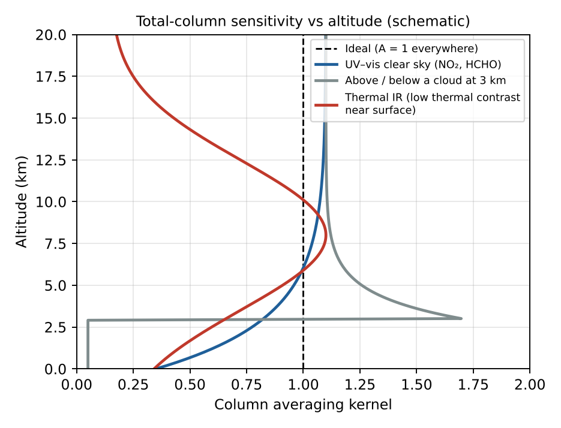
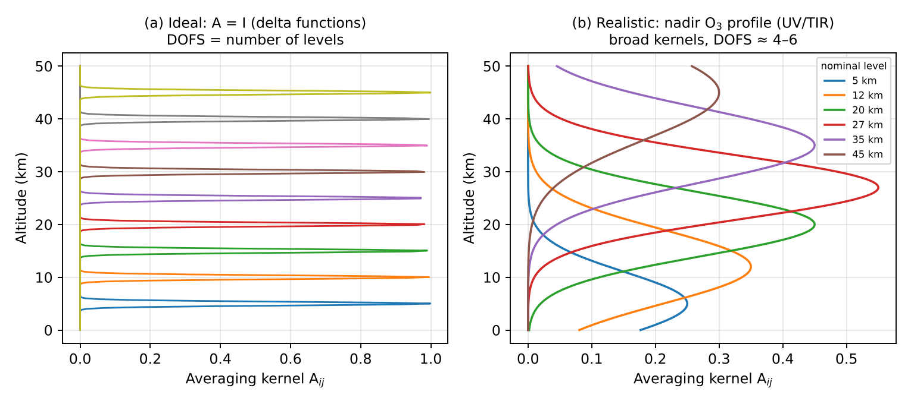

Trang chủ › M5 · Độ nhạy: averaging kernel
- Which magnitude is used to quantify the sensitivity of passive remote sensing methods for retrieving the concentration of trace gases?
- Explain the general concept and illustrate with drawings a case of ideally perfect sensitivity and a realistic case (such as the retrieval of the ozone profiles using satellite spectral measurements in nadir pointing geometry).
Averaging kernel, nói nôm na
Truy hồi profil giống như vẽ lại một bức tranh từ một bức ảnh mờ: bạn thu được phiên bản làm mượt của bức tranh thật, và chỗ nào ảnh quá mờ thì bạn phải điền bằng phỏng đoán có sẵn (tiên nghiệm). Ma trận averaging kernel A cho biết mức độ “mờ” đó ở từng độ cao.
- Mỗi hàng của A: giá trị truy hồi tại một mực là trung bình có trọng số của profil thật ở mọi mực. Độ rộng (FWHM) = phân giải thẳng đứng; đỉnh = nơi thông tin thực sự đến.
- Diện tích hàng: ≈ 1 → phép đo chiếm ưu thế; ≈ 0 → giá trị chỉ bằng tiên nghiệm.
- DOFS = tr(A) = số mẩu thông tin độc lập về profil.
- Cột: a(z) = ∂VCD̂/∂n(z) (trong DOAS: AMFlớp/AMFtổng); lý tưởng bằng 1 ở mọi độ cao.

Trường hợp lý tưởng và thực tế
(a) Lý tưởng: A = I. Mỗi kernel là hàm delta bằng 1 tại đúng mực của nó, 0 ở nơi khác: truy hồi tái tạo chính xác profil thật, không phụ thuộc tiên nghiệm, phân giải vô hạn, DOFS = số mực.
(b) Thực tế: ozone nadir (UV 270–330 nm của GOME-2/OMI hoặc IASI 9,6 µm):
- Kernel rộng (FWHM ~7–15 km) và chồng nhau → phân giải thẳng đứng ~6–10 km ở bình lưu, kém hơn ở đối lưu.
- Đỉnh lệch khỏi mực danh nghĩa; biên độ < 1 (≈ 0,3–0,6).
- DOFS ≈ 4–6 trong UV (≈ 1 ở đối lưu), ≈ 3–4 với IASI: biết bình lưu trong ~3–4 lớp dày cộng khoảng 1 mẩu thông tin đối lưu.
- Kém nhạy gần mặt đất (Rayleigh, hấp thụ O₃ phía trên, mây) và ở trên 50 km (ít ozone) → các giá trị này chủ yếu lấy từ tiên nghiệm.
Ngược lại, truy hồi ozone limb có kernel hẹp (~2–3 km), DOFS ≈ 20–30, gần với lý tưởng ở tầng bình lưu.

Mô phỏng 12 mực (kiểm chứng bằng Python)
Mô hình tự dựng: N = 12 mực; hàm trọng số K là các đường Gauss có độ rộng w mực; nhiễu Sε = σε²I; tiên nghiệm Sa tương quan theo độ cao (độ dài 3 mực, σa = 1). Kết quả:
| Trường hợp | Độ rộng kernel w | σε | DOFS = tr(A) |
|---|---|---|---|
| Lý tưởng | 0,3 mực | 0,01 | 12,00 |
| Thực tế | 3 mực | 0,1 | 4,34 |
| Nhiễu lớn | 3 mực | 1,0 | 2,89 |
Quan sát: kernel hẹp và đo chính xác → A → I, DOFS → số mực. Tăng nhiễu hoặc làm kernel rộng ra → DOFS giảm, kết quả dựa nhiều hơn vào tiên nghiệm. Hãy tự thử trong công cụ averaging kernel. (DOFS = tr(A) cũng bằng tổng các trị riêng của A; đã kiểm bằng numpy.)
Dùng AK khi so sánh với mô hình: xm,smooth = xa + A (xmodel − xa), sau đó so với x̂; nếu bỏ bước này, chênh lệch có thể do độ nhạy chứ không phải do mô hình.
Exam checklist — phải nêu được
- Name: averaging kernel matrix A = ∂x̂/∂x; DOFS = trace(A).
- x̂ = x_a + A(x − x_a) + Gε — retrieval = smoothed truth + a priori contribution.
- Row width = vertical resolution; area = measurement contribution.
- Draw delta functions (ideal) vs broad, overlapping, peak-shifted kernels (nadir O₃, DOFS ≈ 4–6).
- Đại lượng đo độ nhạy: ma trận hạt nhân trung bình (averaging kernel) A = ∂x̂/∂x; vết của A = số bậc tự do tín hiệu (DOFS).
- Trường hợp lý tưởng: A = ma trận đơn vị → hàm delta tại mỗi độ cao, không phụ thuộc tiên nghiệm.
- Thực tế (O₃ nadir): hạt nhân rộng 7–15 km, chồng lên nhau, biên độ < 1, DOFS ≈ 4–6; gần mặt đất độ nhạy thấp → kết quả phụ thuộc nhiều vào profil tiên nghiệm.
Thực hành tính toán
Các công cụ dưới đây chạy ngay trong trình duyệt, đã đối chiếu với Python:
Averaging kernel và DOFS (mô phỏng 12 mực)